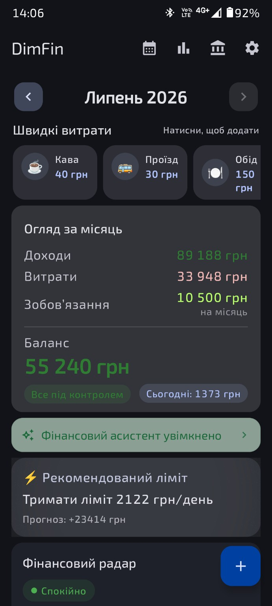
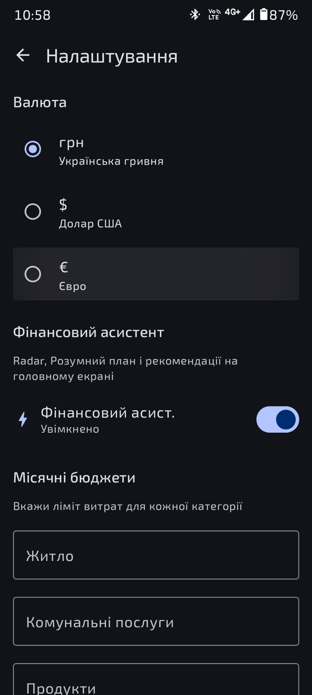

01
Фінансовий радар
Оцінює темп витрат, залишок і майбутні платежі. Показує головний ризик та одну конкретну дію замість десятків показників.
СтатусПрогнозРекомендація
DimFin об’єднує доходи, витрати, місячні бюджети, кредити та розстрочки, показує фінансову картину в календарі й підказує, як спокійно завершити місяць. Нагадує про платежі та щомісяця підбиває фінансові підсумки. Фінанси без доступу до банківських рахунків. Усі дані зберігаються лише на телефоні користувача.

DimFin перетворює щоденні записи на просту картину бюджету — без фінансового жаргону та перевантажених звітів.
Оцінює темп витрат, залишок і майбутні платежі. Показує головний ризик та одну конкретну дію замість десятків показників.
Напишіть «120 кава» або додайте звичну витрату одним натисканням із власного шаблону.
Легкий, нормальний або жорсткий режим — залежно від вашої ситуації.
Контролюйте виконання бюджетів за категоріями, кредити, розстрочки й обов’язкові платежі.
Переглядайте витрати за кожен день місяця, помічайте дні з перевищенням ліміту за кольором і відкривайте список операцій одним натисканням.
DimFin нагадає про платіж за кредитом або розстрочкою за 3 дні, у день сплати та після прострочення. На початку нового місяця застосунок покаже підсумок попереднього: доходи, витрати й баланс.
Натискайте на кроки — поруч з’являтиметься відповідний екран застосунку. Усі приклади показані на реальній версії DimFin.

Від огляду місяця й календаря витрат до бюджетів, кредитів та розстрочок — подивіться, як DimFin допомагає керувати бюджетом щодня.
9 екранівГортайте та натискайте, щоб збільшити
Це застосунок для домашнього бюджету, який допомагає записувати доходи й витрати, контролювати місячні бюджети, кредити та розстрочки, аналізувати фінансові звички й планувати залишок до кінця місяця.
Транзакції, власні шаблони швидких витрат, місячні бюджети, кредити, розстрочки й платежі за ними. Календар показує суми та інтенсивність витрат за днями, а аналітика — баланс, тренди й найбільші категорії.
У налаштуваннях задайте ліміт для потрібних категорій. Після цього в аналітиці з’явиться виконання бюджетів: витрачена сума, відсоток, доступний залишок або розмір перевищення для кожної категорії.
Для кредиту DimFin контролює щомісячний платіж, дату та актуальний залишок. Для розстрочки додатково враховується загальна кількість платежів і показується реальний прогрес: скільки платежів уже сплачено та скільки залишилося.
У кожному дні видно суму витрат, а колір показує її рівень відносно денного ліміту: від доброго темпу до перевищення. Натисніть день, щоб переглянути його доходи й витрати та відкрити потрібну операцію.
Він аналізує внесені дані, оцінює темп витрат і формує зрозумілі підказки: денний ліміт, пріоритетну дію або сценарій економії.
Для активних кредитів і розстрочок DimFin локально перевіряє дати платежів та нагадує за 3 дні, у день сплати й після прострочення. Також на початку кожного місяця надходить фінансовий підсумок за попередній місяць із доходами, витратами та балансом. Сповіщення працюють без передавання фінансових даних на сервер і керуються в налаштуваннях застосунку.
Сторінка DimFin у Google Play уже доступна за прямим посиланням нижче. Можливість встановлення може залежати від поточного етапу тестування.
Відгуки користувачів уже формують наступні версії застосунку.
Знайомство під час першого запуску та особисте привітання.
Короткий помічник, початковий баланс і зручне налаштування рахунків.
Покращення введення сум, кредитів і щоденної роботи з бюджетом.
Можливість вести один бюджет разом із членами сім’ї та бачити спільну фінансову картину.
Порядок і склад функцій можуть змінюватися за результатами тестування.
DimFin допоможе перетворити щоденні витрати на спокійний і реалістичний план.
DimFin доступний для Android. Можливість встановлення може залежати від поточного етапу тестування.Помітили помилку, маєте ідею або хочете запропонувати нову можливість? Напишіть безпосередньо розробнику.